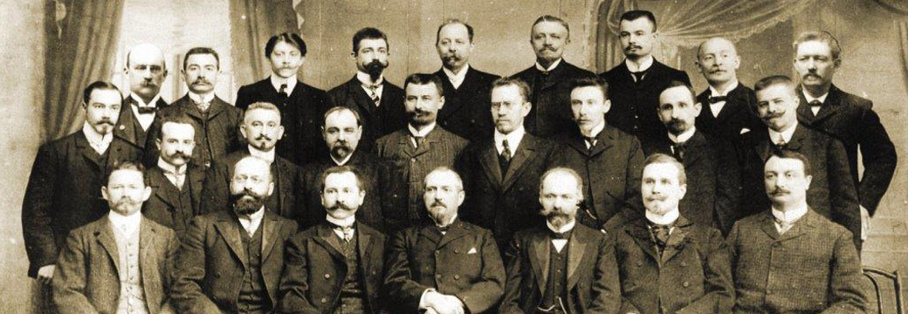
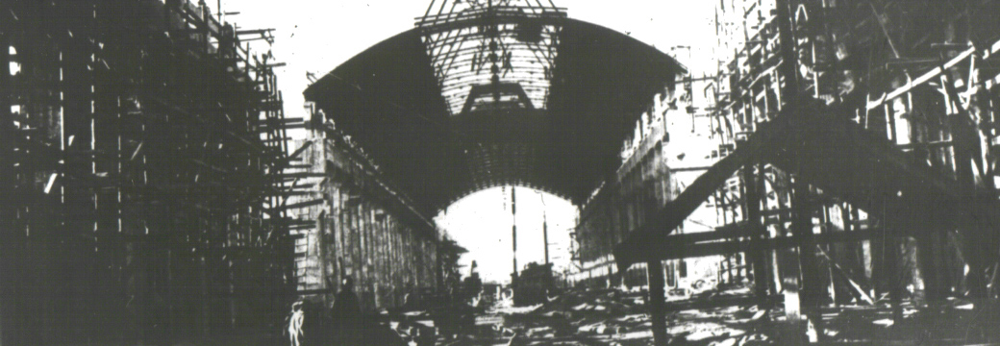
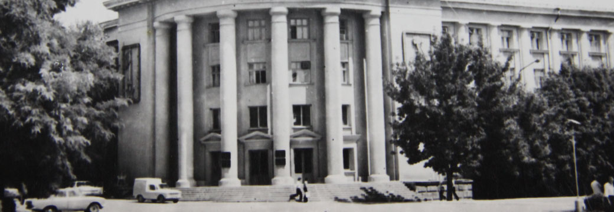
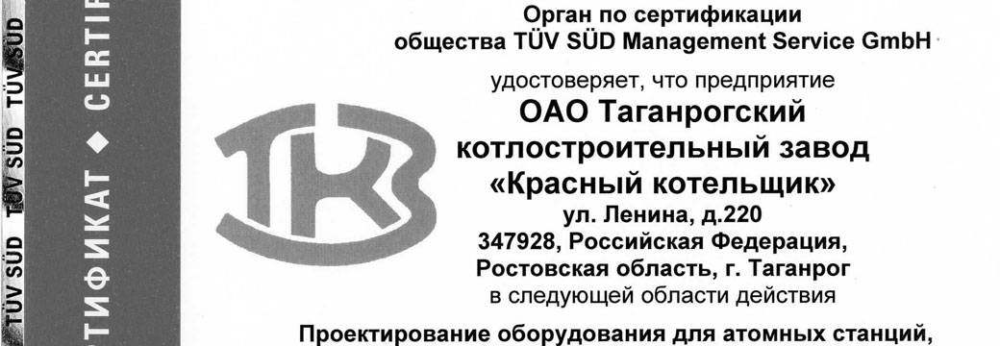
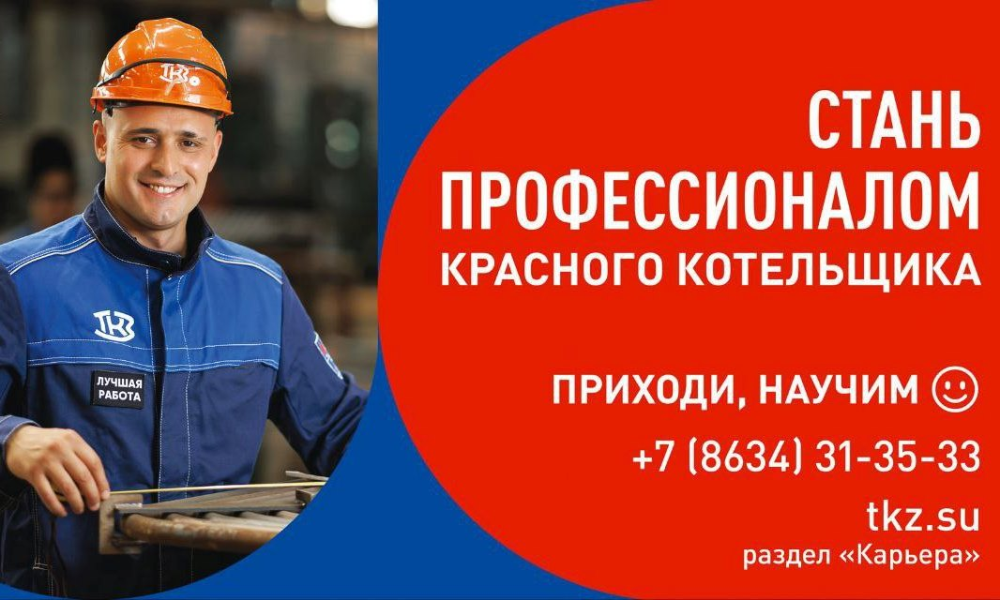

О компании
Таганрогский котлостроительный завод «Красный котельщик» (ТКЗ) – одна из ведущих компаний отечественного котлостроения, имеющая международный опыт и компетенции в области проектирования, изготовления и комплексной поставки оборудования для тепловых, атомных, газотурбинных электростанций и различных отраслей промышленности. Входит в состав «НордЭнергоГрупп», а также в реестр организаций оборонно-промышленного комплекса России.
- Более 120 лет на рынке энергомашиностроения.
- Тысячи зарубежных и отечественных референций.
- Опыт отечественных школ котлостроения – таганрогской, барнаульской.
- Сертификат международного стандарта ISO 9001.
История
Какие силы истории решают, что тот или иной человек, город или завод станут легендарными? Ответы на эти вопросы неизвестны даже маститым историкам. Известно только, что больше века назад в Таганроге родилась одна такая легенда. Легенда, имя которой – «Красный котельщик». И с тех пор, сколько бы времени ни прошло, какие бы перемены ни случались, какая эпоха бы ни длилась, легенда эта живет, ежедневно воплощаясь в свершения, которые и сделали «Красный котельщик» плотью и кровью истории своего города, своего края, своей страны, своего народа…
1986

В «бельгийский» период существования завода, который продлился более 20 лет, на площади в 16 гектаров в шести цехах по 12-14 часов в смену трудилось от полутора сотен до тысячи двухсот взрослых рабочих и подростков.
Удельный вес котлостроения в продукции завода составлял немного – всего 30-40%.
Котлы выпускались разнообразные: пароходные, паровозные, агрегаты типа «Фильда», «Тишбейна», «Ферберна», Шухова.
Из современного по тем временам оборудования выпускались котлы «Фицнер», «Гампер», «Гарбе-Кестнер», ланкаширские. Производительность их составляла всего 2-3 тонны пара в час.
1934

СССР полностью отказался от покупки барабанов для котлов за границей, ТКЗ стал главным поставщиком этого оборудования для всех котлостроительных заводов страны.
В 1934-1935 годах состоялся один из важнейших для довоенной истории предприятия пусков – пуск ЦСБ – цеха сварных барабанов, названного «золотым». С этого времени котельщики смогли отказаться от закупки импортных барабанов для котлов.
Теперь уже «Красный котельщик» стал главным поставщиком барабанов для всех котлостроительных заводов.
К этому же периоду можно отнести постановку стратегической сверхзадачи – отказа от любых импортных поставок и курс на создание собственной независимой базы для отечественной энергетики.
1986
Завод включен в число 70 крупнейших предприятий отрасли, которым предоставлено право непосредственно осуществлять экспортно-импортные операции.
2000
Получены сертификаты американского общества инженеров-механиков (ASME) на право изготовления продукции и нанесения клейм «S», «U» и «U2».
2023

Таганрогский котлостроительный завод провел масштабную информационную кампанию «Стань профессионалом». Проект объединил в себе две цели: сделать акцент на престиже рабочих профессий и объявить, что на предприятии идет активный прием производственного персонала.
«Красный котельщик» вошел в ТОП-100 привлекательных и открытых работодателей страны, успешно развивающих HR-процессы и имидж компании. Независимый Рейтинг работодателей России опубликовал портал HeadHunter (hh.ru).
ТКЗ победил в региональном конкурсе «Лучшие практики наставничества для повышения производительности труда в Ростовской области». На столь высоком уровне оценена практика «Наставник на рабочем месте – эффективный способ адаптации и обучения персонала», которую представило предприятие.
Представители ТКЗ приняли участие в региональном этапе Всероссийского конкурса по неразрушающему контролю. Итог – два призовых места и статус одних из лучших специалистов в области неразрушающего контроля в донском регионе.
Двум улицам Таганрога присвоены имена бывших генеральных директоров «Красного котельщика» Анатолия Паршина и Геннадия Левченко. На фасаде многоквартирного дома по улице Фрунзе, 3 открыта мемориальная доска в честь Анатолия Паршина.